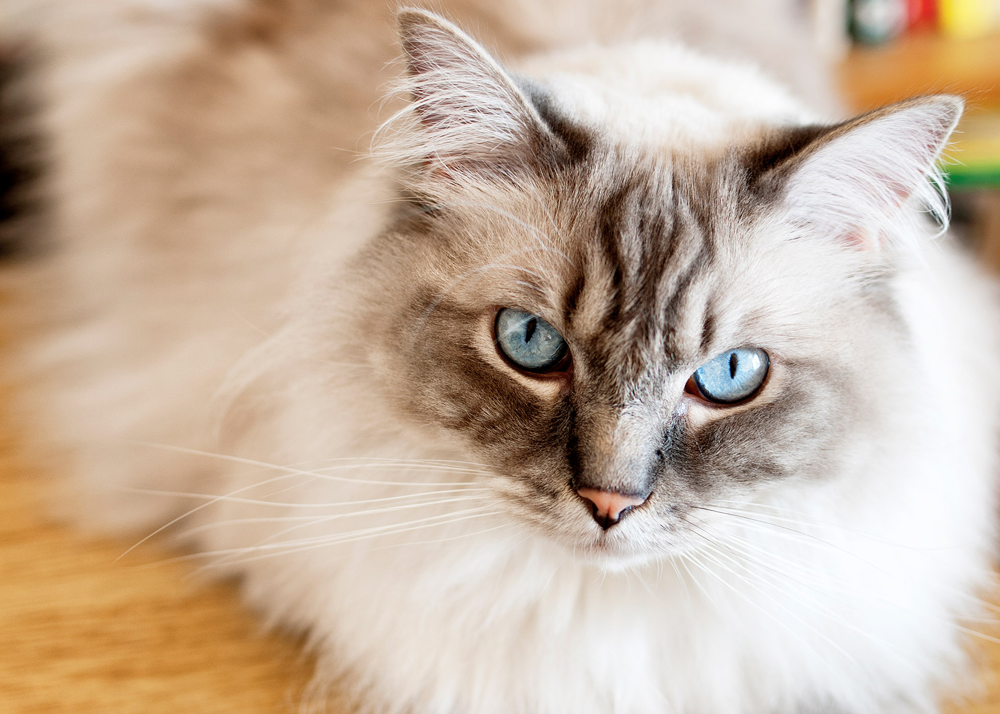
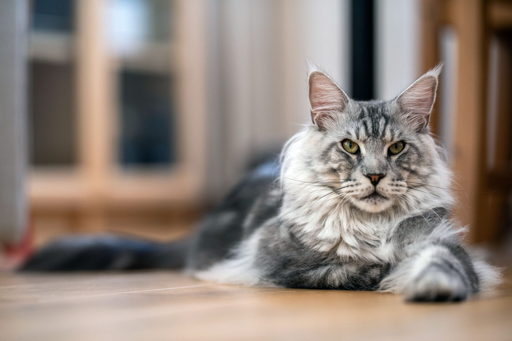
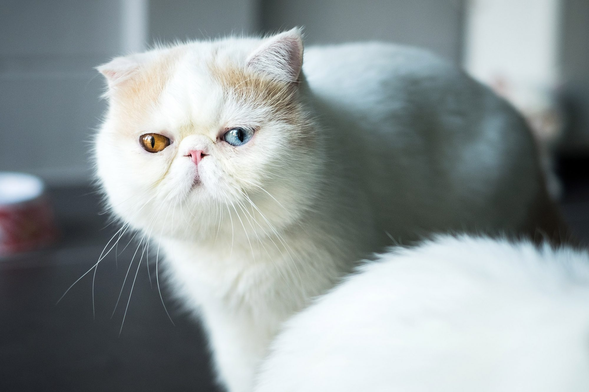
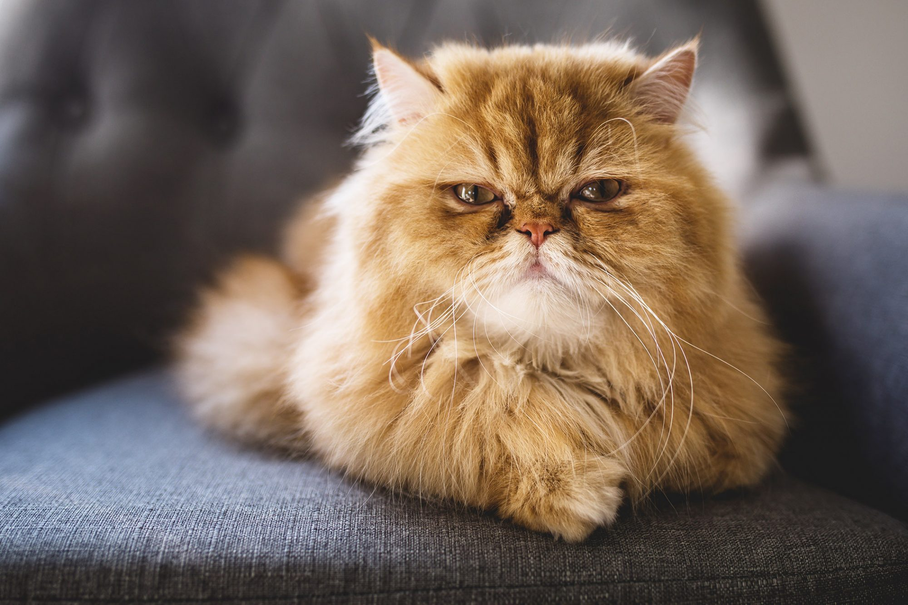
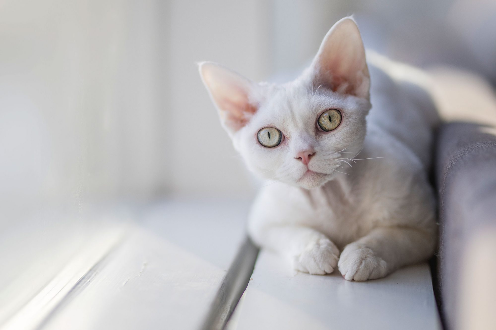
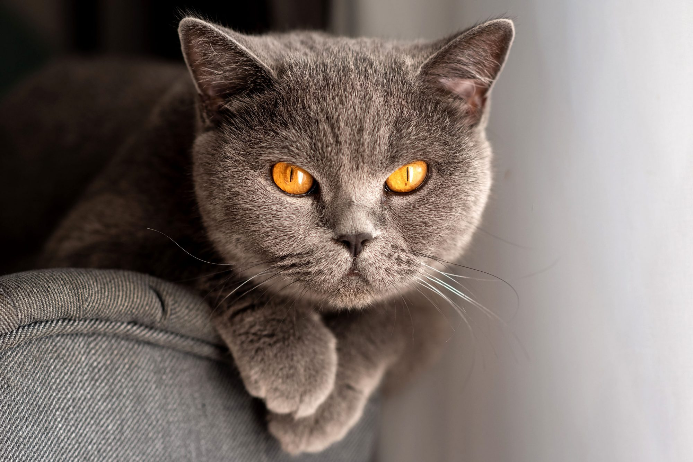
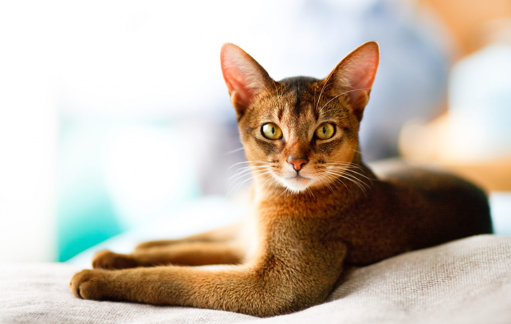
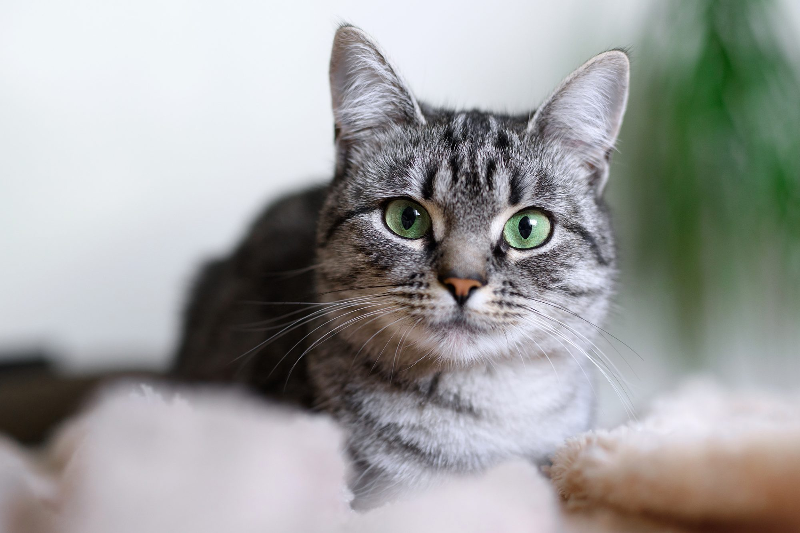
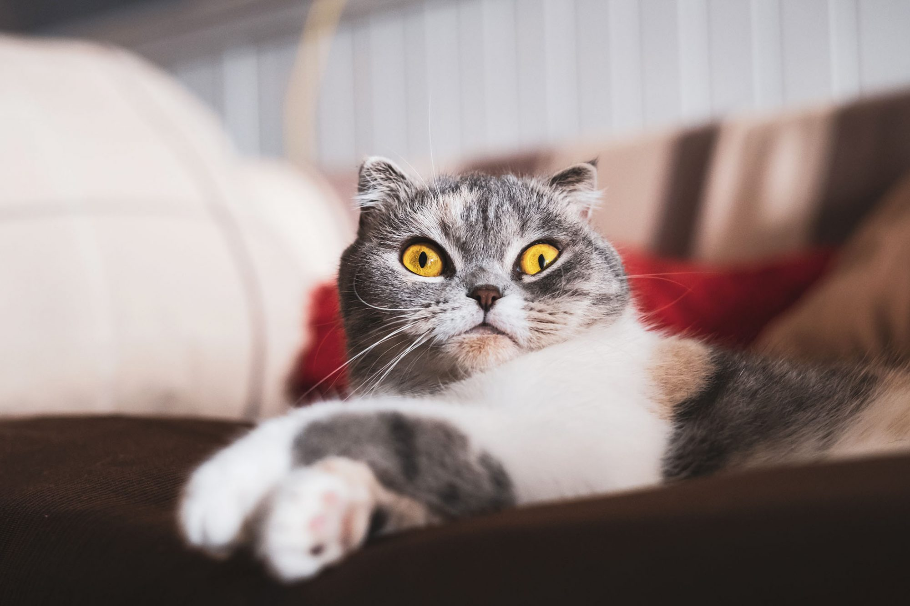
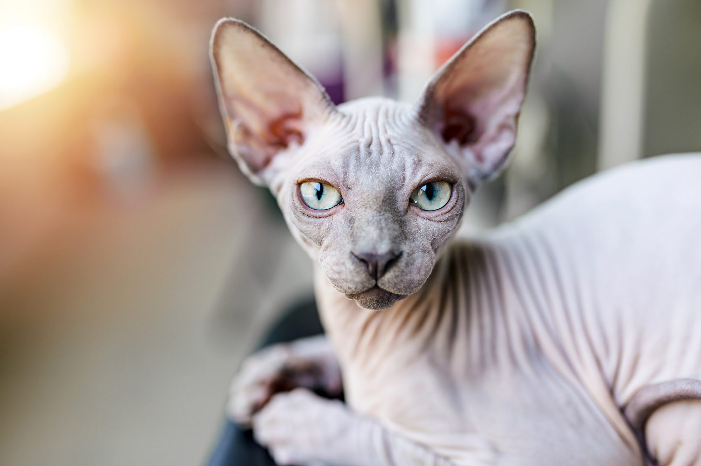

| Image | Breed | Description |
|  | Ragdoll | It has a soft, silky coat and a brown ombre face with bright blue eyes. As the name may suggest, Ragdoll cats often like to go limp in your arms, open for cuddles. They are kind and do well with children, thus making it the perfect cat for the family. |
|  | Maine Coon | One of the largest breeds of housecats. One of the friendliest cat breeds in the world, earning it the nickname of "the gentle giant". |
|  | Exotic | Quite similar to the Persian cat breed, although slightly different and more popular. They have low-maintenance manes that can be kept with just a weekly brush. |
|  | Persian | It has a flat face and long, fluffy fur. It does not need a lot to feel happy and is contented to just be curled up upon your lap. It's fur is very high-maintenance and requires a brush daily. |
|  | Devon Rex | Devon rex cats love being with their owners and often crave attention from them. They love interacting with new things or friends, so it is best to keep them in a stimulating environment and not leave them alone too much. |
|  | British Shorthair | Cats of this breed have an easygoing nature and love for playing with their favorite people. |
|  | Abyssinian | Abyssinians are very active and intelligent. They love accompanying their owners and supervise what they are doing. They get along with pretty much everyone. They are one of the oldest known cat breeds. |
|  | American Shorthair | This breed has been popularized due to their ability to protect against pests. They are now known to be affectionate and endearing pets despite having used to be hunters. |
|  | Scottish Fold | This breed has gotten its name from their characteristic folded ears. With their big, round eyes, they are frequently described to be owl-like. |
|  | Sphynx | This breed is noticeably hairless, which makes it popular among people with allergies. They are very active and curious, making it easy to train. |
Flaws, A. (2022, February 4). The 10 most popular cat breeds in the world. Daily Paws. Retrieved from https://www.dailypaws.com/living-with-pets/pet-compatibility/most-popular-cat-breeds
Want to donate? Fill out this form!